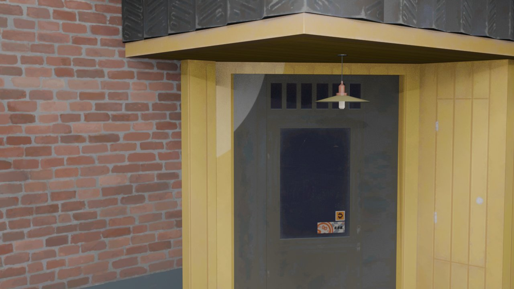
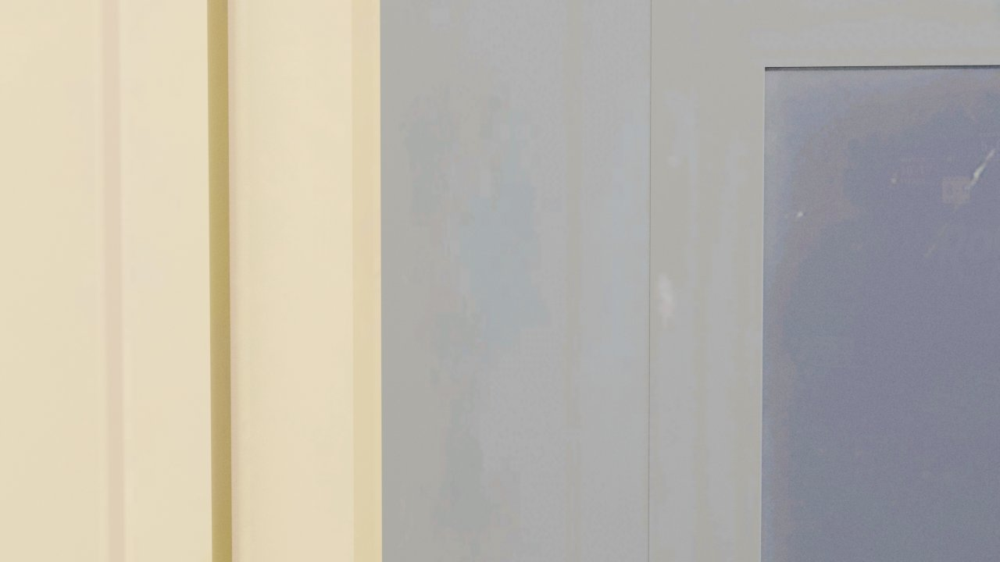

TECH MATRIX // 5 DIRECTIONS
首页技术方向
对照板
学 Active Theory / Nanfu 的技术结构，不抄电池视觉。五条路径都可本地点开讨论；默认不动正式首页。
TECH DIRECTION 01
低成本 · 高冲击 · 静图可评审
巨物式
录像店入口
学 Nanfu 的技术结构：全屏视频/海报底、巨大主体压屏、短标题贴边、亮色 CTA。主体改成门牌/海报巨物，不抄产品图。
验证：产品巨物构图能否替代 3D 店铺作为默认首屏。

TECH DIRECTION 02
中成本 · 强沉浸 · 需预加载
滚动驱动
进店镜头
不用实时 3D，用 48 张预渲染帧模拟高级转场。滚动就是时间轴。进入本段会后台预热帧，减少闪白。

TECH DIRECTION 03
低成本 · 强导航 · 状态机
信号控制台
把首页做成可点选的频道选择：档案、角色、活动、幕后。技术上是轻量状态机，适合内容站默认入口。

TECH DIRECTION 04
中成本 · 可控加载 · 点击才播
点击驱动
视频进店
与滚动帧序列对照：视频只在用户点击后加载。失败或减少动效时直接切海报终帧，作为性能兜底。
验证：视频首屏 + 用户手势加载，是否比全量预载更稳。


TECH DIRECTION 05
工程兜底 · 移动优先 · 可开关
性能 / 移动
降级层
同一内容两套表现：高配 = 多卡巨物 + 光晕；低配 = 单海报 + 清晰导航。讨论首页时必须先定降级策略，而不是只做桌面高潮。
验证：弱网、省电、reduced-motion 时首页是否仍可读、可点、可讲解。